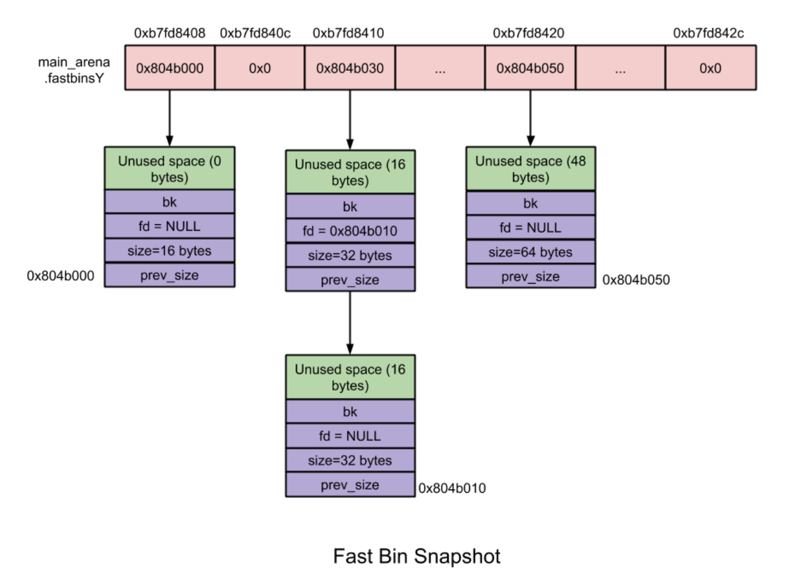

堆相关数据结构
堆的操作就这么复杂，那么在 glibc 内部必然也有精心设计的数据结构来管理它。与堆相应的数据结构主要分为
- 宏观结构，包含堆的宏观信息，可以通过这些数据结构索引堆的基本信息。
- 微观结构，用于具体处理堆的分配与回收中的内存块。
宏观结构
32位内存布局
从高地址到低地址为：不可访问的内核空间，栈空间（由高地址向低地址生长），内存布局区，堆空间（由低地址向高地址生长），BSS，数据段，文本段。本报告讨论进程的栈空间和堆空间的具体结构。
64位内存布局
用户空间的布局和32位差别很小。
堆管理介绍
3 种数据结构
在 glibc 的 malloc 中针对堆管理，主要涉及到以下 3 种数据结构：
- heap_info（即Heap Header）对应管理 heap
- malloc_state（即Arena Header） 对应管理 area
- malloc_chunk（即Chunk Header） 对应管理 chunk
这里堆管理会出现在多线程，一般pwn题不会涉及多线程操作，也就是都是在 main_area 上操作，因此可选择性阅读 heap_info、malloc_state。
heap_info
heap_info: 即Heap Header，因为一个thread arena（注意：不包含main thread）可以包含多个heaps，所以为了便于管理，就给每个 heap 分配一个 heap header。那么在什么情况下一个thread arena会包含多个 heaps 呢?在当前 heap 不够用的时候，malloc 会通过系统调用 mmap 申请新的堆空间，新的堆空间会被添加到当前thread arena中，便于管理。
typedef struct _heap_info
{
mstate ar_ptr; /* Arena for this heap. */
struct _heap_info *prev; /* Previous heap. */
size_t size; /* Current size in bytes. */
size_t mprotect_size; /* Size in bytes that has been mprotected
PROT_READ|PROT_WRITE. */
/* Make sure the following data is properly aligned, particularly
that sizeof (heap_info) + 2 * SIZE_SZ is a multiple of
MALLOC_ALIGNMENT. */
char pad[-6 * SIZE_SZ & MALLOC_ALIGN_MASK];
} heap_info;
Arena 数量限制
主线程和子线程有自己独立的 arena，那么是不是无论有多少个线程，每个线程都有自己独立的 arena 呢？答案是否定的。事实上，arena的个数是跟系统中处理器核心个数相关的，如下表所示：
| systems | number of arena |
|---|---|
| 32bits | 2 x number of cpu cores + 1 |
| 64bits | 8 x number of cpu cores + 1 |
Arena 管理
假设有如下情景：一台只含有一个处理器核心的机器安装有 32 位操作系统，其上运行了一个多线程应用程序，共含有 4 个线程——主线程和三个子线程。显然线程个数大于系统能维护的最大 arena 个数（2 x 核心数 + 1= 3），那么此时 glibc 的 malloc 就需要确保这 4 个线程能够正确地共享这 3 个 arena，那么它是如何实现的呢？
当主线程首次调用 malloc 的时候会直接为它分配一个 main arena，而不需要任何附加条件。
当子线程 1 和子线程 2 首次调用 malloc 的时候，glibc 实现的 malloc 会分别为每个子线程创建一个新的 thread arena。此时，各个线程与 arena 是一一对应的。但是，当用户线程 3 调用 malloc 的时候就出现问题了。因为此时 glibc 的 malloc 能维护的 arena 个数已经达到上限，无法再为子线程 3 分配新的 arena 了，那么就需要重复使用已经分配好的 3 个 arena 中的一个（main arena, arena1 或者 arena2）。那么该选择哪个 arena 进行重复利用呢？glibc 的 malloc 遵循以下规则：
- 首先循环遍历所有可用的 arena，在遍历的过程中，它会尝试加锁该 arena。如果成功加锁（该 arena 当前对应的线程并未使用堆内存则表示可加锁），比如将 main arena 成功锁住，那么就将 main arena 返回给用户，即表示该 arena 被子线程 3 共享使用。
- 如果没能找到可用的 arena，那么就将子线程 3 的
malloc操作阻塞，直到有可用的 arena 为止。 - 现在，如果子线程 3 再次调用
malloc的话，glibc的malloc就会先尝试使用最近访问的 arena（此时为 main arena）。如果此时 main arena 可用的话，就直接使用，否则就将子线程 3 阻塞，直到 main arena 再次可用为止。
这样子线程 3 与主线程就共享 main arena 了。至于其他更复杂的情况，以此类推。
malloc_state
malloc_state: 即Arena Header，用于表示 area 的信息，每个thread只含有一个Arena Header。Arena Header包含bins的信息、top chunk以及最后一个remainder chunk等(这些概念会在后文详细介绍):
struct malloc_state
{
/* Serialize access. */
mutex_t mutex;
/* Flags (formerly in max_fast). */
int flags;
/* Fastbins */
mfastbinptr fastbinsY[NFASTBINS];
/* Base of the topmost chunk -- not otherwise kept in a bin */
mchunkptr top;
/* The remainder from the most recent split of a small request */
mchunkptr last_remainder;
/* Normal bins packed as described above */
mchunkptr bins[NBINS * 2 - 2];
/* Bitmap of bins */
unsigned int binmap[BINMAPSIZE];
/* Linked list */
struct malloc_state *next;
/* Linked list for free arenas. */
struct malloc_state *next_free;
/* Memory allocated from the system in this arena. */
INTERNAL_SIZE_T system_mem;
INTERNAL_SIZE_T max_system_mem;
};
malloc_chunk
malloc_chunk: 即Chunk Header，一个heap被分为多个chunk，至于每个chunk的大小，这是根据用户的请求决定的，也就是说用户调用malloc(size_t size)传递的size参数“就是”chunk的大小(这里给“就是”加上引号，说明这种表示并不准确，但是为了方便理解就暂时这么描述了，详细说明见后文)。每个chunk都由一个结构体malloc_chunk表示：
struct malloc_chunk {
/* #define INTERNAL_SIZE_T size_t */
INTERNAL_SIZE_T prev_size; /* Size of previous chunk (if free). */
INTERNAL_SIZE_T size; /* Size in bytes, including overhead. */
struct malloc_chunk* fd; /* double links -- used only if free. 这两个指针只在free chunk中存在*/
struct malloc_chunk* bk;
/* Only used for large blocks: pointer to next larger size. */
struct malloc_chunk* fd_nextsize; /* double links -- used only if free. */
struct malloc_chunk* bk_nextsize;
};
关于上述的结构（malloc_chunk主线程也用到），针对子线程的，主线程和子线程有一些不同：
- 主线程的堆不是分配在内存映射区，而是进程的虚拟内存堆区，因此不含有多个 heap 所以也就不含有
heap_info结构体。当需要更多堆空间的时候，直接通过增长brk指针来获取更多的空间，直到它碰到内存映射区域（mapping）为止。 - 不同于 thread arena，主线程的 main arena 的 arena header 并不在堆区中，而是一个全局变量，因此它属于
libc.so的 data segment 区域。
heap segment与arena关系
首先，通过内存分布图理清malloc_state与heap_info之间的组织关系。
下图是只有一个heap segment的main arena和thread arena的内存分布图：

下图是一个thread arena中含有多个heap segments的情况：

从上图可以看出，thread arena只含有一个malloc_state(即arena header)，却有两个heap_info(即heap header)。由于两个heap segments是通过mmap分配的内存，两者在内存布局上并不相邻而是分属于不同的内存区间，所以为了便于管理，libc malloc将第二个heap_info结构体的prev成员指向了第一个heap_info结构体的起始位置（即ar_ptr成员），而第一个heap_info结构体的ar_ptr成员指向了malloc_state，这样就构成了一个单链表，方便后续管理。
微观结构
chunk 介绍
概述
在 glibc malloc 中将整个堆内存空间分成了连续的、大小不一的 chunk ，即对于堆内存管理而言 chunk 就是最小操作单位。chunk 总共分为 4 大类：
- allocated chunk
- free chunk
- top chunk
- last remainder chunk
从本质上来说，所有类型的 chunk 都是内存中一块连续的区域，只是通过该区域中特定位置的某些标识符加以区分。为了简便，也可以将这 4 大类 chunk 简化为 2 类：allocated chunk 以及 free chunk，前者表示已经分配给用户使用的 chunk，后者表示未使用的 chunk。
任何堆内存管理器都是以 chunk 为单位进行堆内存管理的，而这就需要一些数据结构来标志各个块的边界，以及区分已分配块和空闲块。大多数堆内存管理器都将这些边界信息作为 chunk 的一部分嵌入到 chunk 内部。
无论一个 chunk 的大小如何，处于分配状态还是释放状态，它们都使用一个统一的结构（malloc_chunk）。虽然它们使用了同一个数据结构，但是根据是否被释放，它们的表现形式会有所不同。
malloc_chunk (allocated chunk)
malloc_chunk 的结构如下:
/*
This struct declaration is misleading (but accurate and necessary).
It declares a "view" into memory allowing access to necessary
fields at known offsets from a given base. See explanation below.
*/
struct malloc_chunk {
INTERNAL_SIZE_T prev_size; /* Size of previous chunk (if free). */
INTERNAL_SIZE_T size; /* Size in bytes, including overhead. */
struct malloc_chunk* fd; /* double links -- used only if free. */
struct malloc_chunk* bk;
/* Only used for large blocks: pointer to next larger size. */
struct malloc_chunk* fd_nextsize; /* double links -- used only if free. */
struct malloc_chunk* bk_nextsize;
};
一般来说，size_t 在 64 位中是 64 位无符号整数，32 位中是 32 位无符号整数。
每个字段的具体的解释如下
- prev_size
如果该 chunk 的物理相邻的前一地址 chunk（两个指针的地址差值为前一 chunk 大小）是空闲的话，那该字段记录的是前一个 chunk 的大小 (包括 chunk 头)。否则，该字段可以用来存储物理相邻的前一个 chunk 的数据。这里的前一 chunk 指的是较低地址的 chunk 。
- size
该 chunk 的大小，大小必须是 2 * SIZE_SZ 的整数倍。如果申请的内存大小不是 2 * SIZE_SZ 的整数倍，会被转换满足大小的最小的 2 * SIZE_SZ 的倍数。32 位系统中，SIZE_SZ 是 4；64 位系统中，SIZE_SZ 是 8。 该字段的低三个比特位对 chunk 的大小没有影响，它们从高到低分别表示
- NON_MAIN_ARENA，记录当前 chunk 是否不属于主线程，1 表示不属于，0 表示属于。
- IS_MAPPED，记录当前 chunk 是否是由 mmap 分配的。
-
PREV_INUSE，记录前一个 chunk 块是否被分配。一般来说，堆中第一个被分配的内存块的 size 字段的 P 位都会被设置为 1，以便于防止访问前面的非法内存。当一个 chunk 的 size 的 P 位为 0 时，我们能通过 prev_size 字段来获取上一个 chunk 的大小以及地址。这也方便进行空闲 chunk 之间的合并。
-
fd，bk
chunk 处于分配状态时，从 fd 字段开始是用户的数据。chunk 空闲时，会被添加到对应的空闲管理链表中，其字段的含义如下
- fd 指向下一个（非物理相邻）空闲的 chunk
- bk 指向上一个（非物理相邻）空闲的 chunk
-
通过 fd 和 bk 可以将空闲的 chunk 块加入到空闲的 chunk 块链表进行统一管理
-
fd_nextsize， bk_nextsize
也是只有 chunk 空闲的时候才使用，不过其用于较大的 chunk（large chunk）。
- fd_nextsize 指向前一个与当前 chunk 大小不同的第一个空闲块，不包含 bin 的头指针。
- bk_nextsize 指向后一个与当前 chunk 大小不同的第一个空闲块，不包含 bin 的头指针。
- 一般空闲的 large chunk 在 fd 的遍历顺序中，按照由大到小的顺序排列。这样做可以避免在寻找合适 chunk 时挨个遍历。
一个已经分配的 chunk 的样子如下。我们称前两个字段称为 chunk header，后面的部分称为 user data。每次 malloc 申请得到的内存指针，其实指向 user data 的起始处。
当一个 chunk 处于使用状态时，它的下一个 chunk 的 prev_size 域无效，所以下一个 chunk 的该部分也可以被当前 chunk 使用。这就是 chunk 中的空间复用。
已经被分配使用的 chunk 结构如下两个图：（图一图二 size 位 A 与 N 相同含义只是表示不同）
chunk-> +-+-+-+-+-+-+-+-+-+-+-+-+-+-+-+-+-+-+-+-+-+-+-+-+-+-+-+-+-+-+-+-+
| Size of previous chunk, if unallocated (P clear) |
+-+-+-+-+-+-+-+-+-+-+-+-+-+-+-+-+-+-+-+-+-+-+-+-+-+-+-+-+-+-+-+-+
| Size of chunk, in bytes |A|M|P|
mem-> +-+-+-+-+-+-+-+-+-+-+-+-+-+-+-+-+-+-+-+-+-+-+-+-+-+-+-+-+-+-+-+-+
| User data starts here... .
. .
. (malloc_usable_size() bytes) .
next . |
chunk-> +-+-+-+-+-+-+-+-+-+-+-+-+-+-+-+-+-+-+-+-+-+-+-+-+-+-+-+-+-+-+-+-+
| (size of chunk, but used for application data) |
+-+-+-+-+-+-+-+-+-+-+-+-+-+-+-+-+-+-+-+-+-+-+-+-+-+-+-+-+-+-+-+-+
| Size of next chunk, in bytes |A|0|1|
+-+-+-+-+-+-+-+-+-+-+-+-+-+-+-+-+-+-+-+-+-+-+-+-+-+-+-+-+-+-+-+-+
free_chunk
被释放的 chunk 被记录在链表中（可能是循环双向链表，也可能是单向链表）。具体结构如下：
chunk-> +-+-+-+-+-+-+-+-+-+-+-+-+-+-+-+-+-+-+-+-+-+-+-+-+-+-+-+-+-+-+-+-+
| Size of previous chunk, if unallocated (P clear) |
+-+-+-+-+-+-+-+-+-+-+-+-+-+-+-+-+-+-+-+-+-+-+-+-+-+-+-+-+-+-+-+-+
`head:' | Size of chunk, in bytes |A|0|P|
mem-> +-+-+-+-+-+-+-+-+-+-+-+-+-+-+-+-+-+-+-+-+-+-+-+-+-+-+-+-+-+-+-+-+
| Forward pointer to next chunk in list |
+-+-+-+-+-+-+-+-+-+-+-+-+-+-+-+-+-+-+-+-+-+-+-+-+-+-+-+-+-+-+-+-+
| Back pointer to previous chunk in list |
+-+-+-+-+-+-+-+-+-+-+-+-+-+-+-+-+-+-+-+-+-+-+-+-+-+-+-+-+-+-+-+-+
| Unused space (may be 0 bytes long) .
. .
next . |
chunk-> +-+-+-+-+-+-+-+-+-+-+-+-+-+-+-+-+-+-+-+-+-+-+-+-+-+-+-+-+-+-+-+-+
`foot:' | Size of chunk, in bytes |
+-+-+-+-+-+-+-+-+-+-+-+-+-+-+-+-+-+-+-+-+-+-+-+-+-+-+-+-+-+-+-+-+
| Size of next chunk, in bytes |A|0|0|
+-+-+-+-+-+-+-+-+-+-+-+-+-+-+-+-+-+-+-+-+-+-+-+-+-+-+-+-+-+-+-+-+
可以发现，如果一个 chunk 处于 free 状态，那么会有两个位置记录其相应的大小
- 本身的 size 字段会记录。（图中最后一行 size 位）
- 它后面的 chunk 会记录。（图中倒数第二行 nextchunk 的 prevsize 位）
一般情况下（fastbin中存在特例），物理相邻的两个空闲 chunk 会被合并为一个 chunk 。堆管理器会通过 prev_size 字段以及 size 字段合并两个物理相邻的空闲 chunk 块。
！！！一些关于堆的约束，后面详细考虑！！！
/*
The three exceptions to all this are:
1. The special chunk `top' doesn't bother using the
trailing size field since there is no next contiguous chunk
that would have to index off it. After initialization, `top'
is forced to always exist. If it would become less than
MINSIZE bytes long, it is replenished.
2. Chunks allocated via mmap, which have the second-lowest-order
bit M (IS_MMAPPED) set in their size fields. Because they are
allocated one-by-one, each must contain its own trailing size
field. If the M bit is set, the other bits are ignored
(because mmapped chunks are neither in an arena, nor adjacent
to a freed chunk). The M bit is also used for chunks which
originally came from a dumped heap via malloc_set_state in
hooks.c.
3. Chunks in fastbins are treated as allocated chunks from the
point of view of the chunk allocator. They are consolidated
with their neighbors only in bulk, in malloc_consolidate.
*/
top chunk
glibc 中对于 top chunk 的描述如下
/*
Top
The top-most available chunk (i.e., the one bordering the end of
available memory) is treated specially. It is never included in
any bin, is used only if no other chunk is available, and is
released back to the system if it is very large (see
M_TRIM_THRESHOLD). Because top initially
points to its own bin with initial zero size, thus forcing
extension on the first malloc request, we avoid having any special
code in malloc to check whether it even exists yet. But we still
need to do so when getting memory from system, so we make
initial_top treat the bin as a legal but unusable chunk during the
interval between initialization and the first call to
sysmalloc. (This is somewhat delicate, since it relies on
the 2 preceding words to be zero during this interval as well.)
*/
/* Conveniently, the unsorted bin can be used as dummy top on first call */
#define initial_top(M) (unsorted_chunks(M))
程序第一次进行 malloc 的时候，heap 会被分为两块，一块给用户，剩下的那块就是 top chunk。其实，所谓的 top chunk 就是处于当前堆的物理地址最高的 chunk。top chunk 不属于任何一个 bin，它的作用在于当所有的 bin 都无法满足用户请求的大小时，如果 top chunk 大小不小于用户请求的大小，就将该 top chunk 分作两部分：用户请求的 chunk 和 剩余的部分（成为新的 top chunk）。否则，就对 heap 进行扩展后再进行分配。在 main arena 中通过 sbrk 扩展 heap，而在thread arena 中通过 mmap 分配新的 heap。
需要注意的是，top chunk 的 prev_inuse 比特位始终为 1，否则其前面的 chunk 就会被合并到 top chunk 中。
初始情况下，我们可以将 unsorted chunk 作为 top chunk。
last remainder
在用户使用 malloc 请求分配内存时，ptmalloc2 找到的 chunk （bin中的chunk）可能并不和申请的内存大小一致，这时候就将分割之后的剩余部分称之为 last remainder chunk ，unsort bin 也会存这一块。top chunk 分割剩下的部分不会作为 last remainder。
chunk 相关宏
这里主要介绍 chunk 的大小、对齐检查以及一些转换的宏。
chunk 与 mem 指针头部的转换
mem 指向用户得到的内存的起始位置。
/* conversion from malloc headers to user pointers, and back */
#define chunk2mem(p) ((void *) ((char *) (p) + 2 * SIZE_SZ))
#define mem2chunk(mem) ((mchunkptr)((char *) (mem) -2 * SIZE_SZ))
最小的 chunk 大小
/* The smallest possible chunk */
#define MIN_CHUNK_SIZE (offsetof(struct malloc_chunk, fd_nextsize))
这里，offsetof 函数计算出 fd_nextsize 在 malloc_chunk 中的偏移，说明最小的 chunk 至少要包含 bk 指针。
最小申请的堆内存大小
用户最小申请的内存大小必须是 2 * SIZE_SZ 的最小整数倍。
注：就目前而看 MIN_CHUNK_SIZE 和 MINSIZE 大小是一致的，个人认为之所以要添加两个宏是为了方便以后修改 malloc_chunk 时方便一些。
/* The smallest size we can malloc is an aligned minimal chunk */
//MALLOC_ALIGN_MASK = 2 * SIZE_SZ -1
#define MINSIZE \
(unsigned long) (((MIN_CHUNK_SIZE + MALLOC_ALIGN_MASK) & \
~MALLOC_ALIGN_MASK))
检查分配给用户的内存是否对齐
2 * SIZE_SZ 大小对齐。
/* Check if m has acceptable alignment */
// MALLOC_ALIGN_MASK = 2 * SIZE_SZ -1
#define aligned_OK(m) (((unsigned long) (m) & MALLOC_ALIGN_MASK) == 0)
#define misaligned_chunk(p) \
((uintptr_t)(MALLOC_ALIGNMENT == 2 * SIZE_SZ ? (p) : chunk2mem(p)) & \
MALLOC_ALIGN_MASK)
请求字节数判断
/*
Check if a request is so large that it would wrap around zero when
padded and aligned. To simplify some other code, the bound is made
low enough so that adding MINSIZE will also not wrap around zero.
*/
#define REQUEST_OUT_OF_RANGE(req) \
((unsigned long) (req) >= (unsigned long) (INTERNAL_SIZE_T)(-2 * MINSIZE))
将用户请求内存大小转为实际分配内存大小
/* pad request bytes into a usable size -- internal version */
//MALLOC_ALIGN_MASK = 2 * SIZE_SZ -1
#define request2size(req) \
(((req) + SIZE_SZ + MALLOC_ALIGN_MASK < MINSIZE) \
? MINSIZE \
: ((req) + SIZE_SZ + MALLOC_ALIGN_MASK) & ~MALLOC_ALIGN_MASK)
/* Same, except also perform argument check */
#define checked_request2size(req, sz) \
if (REQUEST_OUT_OF_RANGE(req)) { \
__set_errno(ENOMEM); \
return 0; \
} \
(sz) = request2size(req);
当一个 chunk 处于已分配状态时，它的物理相邻的下一个 chunk 的 prev_size 字段必然是无效的，故而这个字段就可以被当前这个 chunk 使用。这就是 ptmalloc 中 chunk 间的复用。具体流程如下
- 首先，利用 REQUEST_OUT_OF_RANGE 判断是否可以分配用户请求的字节大小的 chunk。
- 其次，需要注意的是用户请求的字节是用来存储数据的，即 chunk header 后面的部分。与此同时，由于 chunk 间复用，所以可以使用下一个 chunk 的 prev_size 字段。因此，这里只需要再添加 SIZE_SZ 大小即可以完全存储内容。
- 由于系统中所允许的申请的 chunk 最小是 MINSIZE，所以与其进行比较。如果不满足最低要求，那么就需要直接分配 MINSIZE 字节。
- 如果大于的话，因为系统中申请的 chunk 需要 2 * SIZE_SZ 对齐，所以这里需要加上 MALLOC_ALIGN_MASK 以便于对齐。
个人认为，这里在 request2size 的宏的第一行中没有必要加上 MALLOC_ALIGN_MASK。
需要注意的是，通过这样的计算公式得到的 size 最终一定是满足用户需要的。
标记位相关
/* size field is or'ed with PREV_INUSE when previous adjacent chunk in use */
#define PREV_INUSE 0x1
/* extract inuse bit of previous chunk */
#define prev_inuse(p) ((p)->mchunk_size & PREV_INUSE)
/* size field is or'ed with IS_MMAPPED if the chunk was obtained with mmap() */
#define IS_MMAPPED 0x2
/* check for mmap()'ed chunk */
#define chunk_is_mmapped(p) ((p)->mchunk_size & IS_MMAPPED)
/* size field is or'ed with NON_MAIN_ARENA if the chunk was obtained
from a non-main arena. This is only set immediately before handing
the chunk to the user, if necessary. */
#define NON_MAIN_ARENA 0x4
/* Check for chunk from main arena. */
#define chunk_main_arena(p) (((p)->mchunk_size & NON_MAIN_ARENA) == 0)
/* Mark a chunk as not being on the main arena. */
#define set_non_main_arena(p) ((p)->mchunk_size |= NON_MAIN_ARENA)
/*
Bits to mask off when extracting size
Note: IS_MMAPPED is intentionally not masked off from size field in
macros for which mmapped chunks should never be seen. This should
cause helpful core dumps to occur if it is tried by accident by
people extending or adapting this malloc.
*/
#define SIZE_BITS (PREV_INUSE | IS_MMAPPED | NON_MAIN_ARENA)
获取 chunk size
/* Get size, ignoring use bits */
#define chunksize(p) (chunksize_nomask(p) & ~(SIZE_BITS))
/* Like chunksize, but do not mask SIZE_BITS. */
#define chunksize_nomask(p) ((p)->mchunk_size)
获取下一个物理相邻的 chunk
/* Ptr to next physical malloc_chunk. */
#define next_chunk(p) ((mchunkptr)(((char *) (p)) + chunksize(p)))
获取前一个 chunk 的信息
/* Size of the chunk below P. Only valid if !prev_inuse (P). */
#define prev_size(p) ((p)->mchunk_prev_size)
/* Set the size of the chunk below P. Only valid if !prev_inuse (P). */
#define set_prev_size(p, sz) ((p)->mchunk_prev_size = (sz))
/* Ptr to previous physical malloc_chunk. Only valid if !prev_inuse (P). */
#define prev_chunk(p) ((mchunkptr)(((char *) (p)) - prev_size(p)))
当前 chunk 使用状态相关操作
/* extract p's inuse bit */
#define inuse(p) \
((((mchunkptr)(((char *) (p)) + chunksize(p)))->mchunk_size) & PREV_INUSE)
/* set/clear chunk as being inuse without otherwise disturbing */
#define set_inuse(p) \
((mchunkptr)(((char *) (p)) + chunksize(p)))->mchunk_size |= PREV_INUSE
#define clear_inuse(p) \
((mchunkptr)(((char *) (p)) + chunksize(p)))->mchunk_size &= ~(PREV_INUSE)
设置 chunk 的 size 字段
/* Set size at head, without disturbing its use bit */
// SIZE_BITS = 7
#define set_head_size(p, s) \
((p)->mchunk_size = (((p)->mchunk_size & SIZE_BITS) | (s)))
/* Set size/use field */
#define set_head(p, s) ((p)->mchunk_size = (s))
/* Set size at footer (only when chunk is not in use) */
#define set_foot(p, s) \
(((mchunkptr)((char *) (p) + (s)))->mchunk_prev_size = (s))
获取指定偏移的 chunk
/* Treat space at ptr + offset as a chunk */
#define chunk_at_offset(p, s) ((mchunkptr)(((char *) (p)) + (s)))
指定偏移处 chunk 使用状态相关操作
/* check/set/clear inuse bits in known places */
#define inuse_bit_at_offset(p, s) \
(((mchunkptr)(((char *) (p)) + (s)))->mchunk_size & PREV_INUSE)
#define set_inuse_bit_at_offset(p, s) \
(((mchunkptr)(((char *) (p)) + (s)))->mchunk_size |= PREV_INUSE)
#define clear_inuse_bit_at_offset(p, s) \
(((mchunkptr)(((char *) (p)) + (s)))->mchunk_size &= ~(PREV_INUSE))
bin 介绍
概述
我们曾经说过，用户释放掉的 chunk 不会马上归还给系统，ptmalloc 会统一管理 heap 和 mmap 映射区域中的空闲的 chunk。当用户再一次请求分配内存时，ptmalloc 分配器会试图在空闲的 chunk 中挑选一块合适的给用户。这样可以避免频繁的系统调用，降低内存分配的开销。
在具体的实现中，ptmalloc 采用分箱式方法对空闲的 chunk 进行管理。首先，它会根据空闲的 chunk 的大小以及使用状态将 chunk 初步分为 4 类：fast bins，small bins，large bins，unsorted bin。每类中仍然有更细的划分，相似大小的 chunk 会用双（单）向链表链接起来。也就是说，在每类 bin 的内部仍然会有多个互不相关的链表来保存不同大小的 chunk 。
对于 small bins，large bins，unsorted bin 来说，ptmalloc 将它们维护在同一个数组中。这些 bin 对应的数据结构在 malloc_state 中，如下
#define NBINS 128
/* Normal bins packed as described above */
mchunkptr bins[ NBINS * 2 - 2 ];
一个 bin 相当于一个 chunk 链表，我们把每个链表的头节点 chunk 作为 bins 数组，但是由于这个头节点作为 bin 表头，其 prev_size 与 size 字段是没有任何实际作用的，因此我们在存储头节点 chunk 的时候仅仅只需要存储头节点 chunk 的 fd 和 bk 即可，而其中的 prev_size 与 size 字段被重用为另一个 bin 的头节点的 fd 与 bk，这样可以节省空间，并提高可用性。因此我们仅仅只需要 mchunkptr 类型的指针数组就足够存储这些头节点，那 prev_size 与 size 字段到底是怎么重用的呢？这里我们以 32 位系统为例
| 含义 | bin1 的 fd/bin2 的 prev_size | bin1 的 bk/bin2 的 size | bin2 的 fd/bin3 的 prev_size | bin2 的 bk/bin3 的 size |
|---|---|---|---|---|
| bin 下标 | 0 | 1 | 2 | 3 |
可以看出除了第一个 bin（unsorted bin）外，后面的每个 bin 的表头 chunk 会重用前面的 bin 表头 chunk 的 fd 与 bk 字段，将其视为其自身的 prev_size 和 size 字段。这里也说明了一个问题，bin 的下标和我们所说的第几个 bin 并不是一致的。同时，bin 表头的 chunk 头节点 的 prev_size 与 size 字段不能随便修改，因为这两个字段是其它 bin 表头 chunk 的 fd 和 bk 字段。
数组中的 bin 依次介绍如下
- （索引）第一个为 unsorted bin，字如其面，这里面的 chunk 没有进行排序，存储的 chunk 比较杂。
- 索引从 2 到 63 的 bin 称为 small bin，同一个 small bin 链表中的 chunk 的大小相同。两个相邻索引的 small bin 链表中的 chunk 大小相差的字节数为 2 个机器字长，即 32 位相差 8 字节，64 位相差 16 字节。
- small bins 后面的 bin 被称作 large bins。large bins 中的每一个 bin 都包含一定范围内的 chunk，其中的 chunk 按 fd 指针的顺序从大到小排列。相同大小的 chunk 同样按照最近使用顺序排列。
在
glibc中用于记录 bin 的数据结构有两种，分别为：
fastbinsY: 这是一个数组，用于记录所有的 fast binbin数组: 这也是一个数组，用于记录除 fast bin 之外的所有 bin 。事实上这个数组共有 126 个元素，分别是:[1]为 unsorted bin[2~63]为 small bin[64~126]为 large bin回顾
malloc_chunk的数据结构，其中的fd和bk指针就是指向当前 chunk 所属的链表中forward chunk或者backward chunk，因此一般的 bin 是一个双向链表（有例外）。
此外，上述这些 bin 的排布都会遵循一个原则：任意两个物理相邻的空闲 chunk 不能在一起。
需要注意的是，并不是所有的 chunk 被释放后就立即被放到 bin 中。ptmalloc 为了提高分配的速度，会把一些小的 chunk 先放到 fast bins 的容器内。而且，fastbin 容器中的 chunk 的使用标记总是被置位的，所以不满足上面的原则。
bin 通用的宏如下
typedef struct malloc_chunk *mbinptr;
/* addressing -- note that bin_at(0) does not exist */
#define bin_at(m, i) \
(mbinptr)(((char *) &((m)->bins[ ((i) -1) * 2 ])) - \
offsetof(struct malloc_chunk, fd))
/* analog of ++bin */
//获取下一个bin的地址
#define next_bin(b) ((mbinptr)((char *) (b) + (sizeof(mchunkptr) << 1)))
/* Reminders about list directionality within bins */
// 这两个宏可以用来遍历bin
// 获取 bin 的位于链表头的 chunk
#define first(b) ((b)->fd)
// 获取 bin 的位于链表尾的 chunk
#define last(b) ((b)->bk)
Fast Bin
大多数程序经常会申请以及释放一些比较小的内存块。如果将一些较小的 chunk 释放之后发现存在与之相邻的空闲的 chunk 并将它们进行合并，那么当下一次再次申请相应大小的 chunk 时，就需要对 chunk 进行分割，这样就大大降低了堆的利用效率。因为我们把大部分时间花在了合并、分割以及中间检查的过程中。因此，ptmalloc 中专门设计了 fast bin，对应的变量就是 malloc state 中的 fastbinsY
/*
Fastbins
An array of lists holding recently freed small chunks. Fastbins
are not doubly linked. It is faster to single-link them, and
since chunks are never removed from the middles of these lists,
double linking is not necessary. Also, unlike regular bins, they
are not even processed in FIFO order (they use faster LIFO) since
ordering doesn't much matter in the transient contexts in which
fastbins are normally used.
Chunks in fastbins keep their inuse bit set, so they cannot
be consolidated with other free chunks. malloc_consolidate
releases all chunks in fastbins and consolidates them with
other free chunks.
*/
typedef struct malloc_chunk *mfastbinptr;
/*
This is in malloc_state.
/* Fastbins */
mfastbinptr fastbinsY[ NFASTBINS ];
*/
为了更加高效地利用 fast bin，glibc 采用单向链表对其中的每个 bin 进行组织(只使用 fd 指针)，并且每个 bin 采取 LIFO 策略（后进先出），最近释放的 chunk 会更早地被分配，所以会更加适合于局部性。也就是说，当用户需要的 chunk 的大小小于 fastbin 的最大大小时， ptmalloc 会首先判断 fastbin 中相应的 bin 中是否有对应大小的空闲块，如果有的话，就会直接从这个 bin 中获取 chunk。如果没有的话，ptmalloc 才会做接下来的一系列操作。
fast bin 中无论是添加还是移除 fast chunk，都是对“链表尾”进行操作，而不会对某个中间的 fast chunk 进行操作。

默认情况下（32 位系统为例）， fastbin 中默认支持最大的 chunk 的数据空间大小为 64 字节。但是其可以支持的 chunk 的数据空间最大为 80 字节。除此之外， fastbin 最多可以支持的 bin 的个数为 10 个，从数据空间为 8 字节开始一直到 80 字节（注意这里说的是数据空间大小，也即除去 prev_size 和 size 字段部分的大小）定义如下：
#define NFASTBINS (fastbin_index(request2size(MAX_FAST_SIZE)) + 1)
#ifndef DEFAULT_MXFAST
#define DEFAULT_MXFAST (64 * SIZE_SZ / 4)
#endif
/* The maximum fastbin request size we support */
#define MAX_FAST_SIZE (80 * SIZE_SZ / 4)
/*
Since the lowest 2 bits in max_fast don't matter in size comparisons,
they are used as flags.
*/
/*
FASTCHUNKS_BIT held in max_fast indicates that there are probably
some fastbin chunks. It is set true on entering a chunk into any
fastbin, and cleared only in malloc_consolidate.
The truth value is inverted so that have_fastchunks will be true
upon startup (since statics are zero-filled), simplifying
initialization checks.
*/
//判断分配区是否有 fast bin chunk，1表示没有
#define FASTCHUNKS_BIT (1U)
#define have_fastchunks(M) (((M)->flags & FASTCHUNKS_BIT) == 0)
#define clear_fastchunks(M) catomic_or(&(M)->flags, FASTCHUNKS_BIT)
#define set_fastchunks(M) catomic_and(&(M)->flags, ~FASTCHUNKS_BIT)
/*
NONCONTIGUOUS_BIT indicates that MORECORE does not return contiguous
regions. Otherwise, contiguity is exploited in merging together,
when possible, results from consecutive MORECORE calls.
The initial value comes from MORECORE_CONTIGUOUS, but is
changed dynamically if mmap is ever used as an sbrk substitute.
*/
// MORECORE是否返回连续的内存区域。
// 主分配区中的MORECORE其实为sbr()，默认返回连续虚拟地址空间
// 非主分配区使用mmap()分配大块虚拟内存，然后进行切分来模拟主分配区的行为
// 而默认情况下mmap映射区域是不保证虚拟地址空间连续的，所以非主分配区默认分配非连续虚拟地址空间。
#define NONCONTIGUOUS_BIT (2U)
#define contiguous(M) (((M)->flags & NONCONTIGUOUS_BIT) == 0)
#define noncontiguous(M) (((M)->flags & NONCONTIGUOUS_BIT) != 0)
#define set_noncontiguous(M) ((M)->flags |= NONCONTIGUOUS_BIT)
#define set_contiguous(M) ((M)->flags &= ~NONCONTIGUOUS_BIT)
/* ARENA_CORRUPTION_BIT is set if a memory corruption was detected on the
arena. Such an arena is no longer used to allocate chunks. Chunks
allocated in that arena before detecting corruption are not freed. */
#define ARENA_CORRUPTION_BIT (4U)
#define arena_is_corrupt(A) (((A)->flags & ARENA_CORRUPTION_BIT))
#define set_arena_corrupt(A) ((A)->flags |= ARENA_CORRUPTION_BIT)
/*
Set value of max_fast.
Use impossibly small value if 0.
Precondition: there are no existing fastbin chunks.
Setting the value clears fastchunk bit but preserves noncontiguous bit.
*/
#define set_max_fast(s) \
global_max_fast = \
(((s) == 0) ? SMALLBIN_WIDTH : ((s + SIZE_SZ) & ~MALLOC_ALIGN_MASK))
#define get_max_fast() global_max_fast
ptmalloc 默认情况下会调用 set_max_fast(s) 将全局变量 global_max_fast 设置为 DEFAULT_MXFAST，也就是设置 fast bins 中 chunk 的最大值。当 MAX_FAST_SIZE 被设置为 0 时，系统就不会支持 fastbin 。
那么
malloc操作具体如何处理 fast chunk 呢？当用户通过
malloc请求的大小属于 fast chunk 的大小范围（注意：用户请求 size 加上 16 字节就是实际内存 chunk size）。在初始化的时候 fast bin 支持的最大内存大小以及所有 fast bin 链表都是空的，所以当最开始使用malloc申请内存的时候，即使申请的内存大小属于 fast chunk 的内存大小（即 16 到 80 字节），它也不会交由 fast bin 来处理，而是向下传递交由 small bin 来处理，如果 small bin 也为空的话就交给 unsorted bin 处理。那么 fast bin 是在哪？怎么进行初始化的呢？当我们第一次调用
malloc的时候，系统执行_int_malloc函数，该函数首先会发现当前 fast bin 为空，就转交给 small bin 处理，进而又发现 small bin 也为空，就调用malloc_consolidate函数对malloc_state结构体进行初始化，malloc_consolidate函数主要完成以下几个功能：
- 首先判断当前
malloc_state结构体中的 fast bin 是否为空，如果为空就说明整个malloc_state（arena）都没有完成初始化，需要对malloc_state进行初始化。malloc_state的初始化操作由函数malloc_init_state(av)完成，该函数先初始化除 fast bin 之外的所有的 bin (构建双链表，详情见后文small bins介绍)，再初始化 fast bins。- 当再次执行
malloc函数的时候，此时 fast bin 相关数据不为空了，就开始使用 fast bin，这部分代码如下：
static void *
_int_malloc (mstate av, size_t bytes)
{
// …
/*
If the size qualifies as a fastbin, first check corresponding bin.
This code is safe to execute even if av is not yet initialized, so we
can try it without checking, which saves some time on this fast path.
*/
//第一次执行malloc(fast chunk)时这里判断为false，因为此时get_max_fast ()为0
if ((unsigned long) (nb) <= (unsigned long) (get_max_fast ()))
{
// use fast bin
idx = fastbin_index (nb);
mfastbinptr *fb = &fastbin (av, idx);
mchunkptr pp = *fb;
do
{
victim = pp;
if (victim == NULL)
break;
}
// remove chunk from fast bin
while ((pp = catomic_compare_and_exchange_val_acq (fb, victim->fd, victim))!= victim);
if (victim != 0)
{
if (__builtin_expect (fastbin_index (chunksize (victim)) != idx, 0))
{
errstr = "malloc(): memory corruption (fast)";
errout:
malloc_printerr (check_action, errstr, chunk2mem (victim));
return NULL;
}
check_remalloced_chunk (av, victim, nb);
void *p = chunk2mem (victim);
alloc_perturb (p, bytes);
return p;
}
}
得到第一个来自于 fast bin 的 chunk 之后，系统就将该 chunk 从对应的 fast bin 中移除，并将其地址返回给用户。
fastbin 的索引
#define fastbin(ar_ptr, idx) ((ar_ptr)->fastbinsY[ idx ])
/* offset 2 to use otherwise unindexable first 2 bins */
// chunk size=2*size_sz*(2+idx)
// 这里要减2，否则的话，前两个bin没有办法索引到。
#define fastbin_index(sz) \
((((unsigned int) (sz)) >> (SIZE_SZ == 8 ? 4 : 3)) - 2)
需要特别注意的是，fastbin 范围的 chunk 的 inuse 始终被置为 1。因此它们不会和其它被释放的 chunk 合并。
但是当释放的 chunk 与该 chunk 相邻的空闲 chunk 合并后的大小大于 FASTBIN_CONSOLIDATION_THRESHOLD 时，内存碎片可能比较多了，我们就需要把 fast bins 中的 chunk 都进行合并，以减少内存碎片对系统的影响。
/*
FASTBIN_CONSOLIDATION_THRESHOLD is the size of a chunk in free()
that triggers automatic consolidation of possibly-surrounding
fastbin chunks. This is a heuristic, so the exact value should not
matter too much. It is defined at half the default trim threshold as a
compromise heuristic to only attempt consolidation if it is likely
to lead to trimming. However, it is not dynamically tunable, since
consolidation reduces fragmentation surrounding large chunks even
if trimming is not used.
*/
#define FASTBIN_CONSOLIDATION_THRESHOLD (65536UL)
malloc_consolidate 函数可以将 fastbin 中所有能和其它 chunk 合并的 chunk 合并在一起。具体地参见后续的详细函数的分析。
/*
Chunks in fastbins keep their inuse bit set, so they cannot
be consolidated with other free chunks. malloc_consolidate
releases all chunks in fastbins and consolidates them with
other free chunks.
*/
Small Bin
small bins 中每个 chunk 的大小与其所在的 bin 的 index 的关系为：chunk_size = 2 * SIZE_SZ *index，具体如下
| 下标 | SIZE_SZ=4（32 位） | SIZE_SZ=8（64 位） |
|---|---|---|
| 2 | 16 | 32 |
| 3 | 24 | 48 |
| 4 | 32 | 64 |
| 5 | 40 | 80 |
| x | 2*4*x | 2*8*x |
| 63 | 504 | 1008 |
small bins 中一共有 62 个循环双向链表，每个链表中存储的 chunk 大小都一致*。比如对于 32 位系统来说，下标 2 对应的双向链表中存储的 chunk 大小为均为 16 字节。每个链表都有链表头结点，这样可以方便对于链表内部结点的管理。此外，small bins 中每个 bin 对应的链表采用 FIFO 的规则（先进先出），所以同一个链表中先被释放的 chunk 会先被分配出去。*物理地址相邻的 free chunk 需要进行合并操作，即合并成一个大的 free chunk 。
当释放 small chunk 的时候，先检查该 chunk 相邻的 chunk 是否为 free chunk，如果是的话就进行合并操作：将这些 chunk 合并成新的 chunk ，然后将它们从 small bin 中移除，最后将新的 chunk 添加到 unsorted bin 中。
small bin 相关的宏如下
#define NSMALLBINS 64
#define SMALLBIN_WIDTH MALLOC_ALIGNMENT
// 是否需要对small bin的下标进行纠正
#define SMALLBIN_CORRECTION (MALLOC_ALIGNMENT > 2 * SIZE_SZ)
#define MIN_LARGE_SIZE ((NSMALLBINS - SMALLBIN_CORRECTION) * SMALLBIN_WIDTH)
//判断chunk的大小是否在small bin范围内
#define in_smallbin_range(sz) \
((unsigned long) (sz) < (unsigned long) MIN_LARGE_SIZE)
// 根据chunk的大小得到small bin对应的索引。
#define smallbin_index(sz) \
((SMALLBIN_WIDTH == 16 ? (((unsigned) (sz)) >> 4) \
: (((unsigned) (sz)) >> 3)) + \
SMALLBIN_CORRECTION)
或许，大家会很疑惑，那 fastbin 与 small bin 中 chunk 的大小会有很大一部分重合啊，那 small bin 中对应大小的 bin 是不是就没有什么作用啊？ 其实不然，fast bin 中的 chunk 是有可能被放到 small bin 中去的，我们在后面分析具体的源代码时会有深刻的体会。
Large Bin
large bins 中一共包括 63 个 bin，每个 bin 中的 chunk 的大小不一致，而是处于一定区间范围内。此外，这 63 个 bin 被分成了 6 组，每组 bin 中的 chunk 大小之间的公差一致，具体如下：
| 组 | 数量 | 公差 |
|---|---|---|
| 1 | 32 | 64B |
| 2 | 16 | 512B |
| 3 | 8 | 4096B |
| 4 | 4 | 32768B |
| 5 | 2 | 262144B |
| 6 | 1 | 不限制 |
这里我们以 32 位平台的 large bin 为例，第一个 large bin 的起始 chunk 大小为 512 字节，位于第一组，所以该 bin 可以存储的 chunk 的大小范围为 [512,512+64)。
关于 large bin 的宏如下，这里我们以 32 位平台下，第一个 large bin 的起始 chunk 大小为例，为 512 字节，那么 512>>6 = 8，所以其下标为 56+8=64。
#define largebin_index_32(sz) \
(((((unsigned long) (sz)) >> 6) <= 38) \
? 56 + (((unsigned long) (sz)) >> 6) \
: ((((unsigned long) (sz)) >> 9) <= 20) \
? 91 + (((unsigned long) (sz)) >> 9) \
: ((((unsigned long) (sz)) >> 12) <= 10) \
? 110 + (((unsigned long) (sz)) >> 12) \
: ((((unsigned long) (sz)) >> 15) <= 4) \
? 119 + (((unsigned long) (sz)) >> 15) \
: ((((unsigned long) (sz)) >> 18) <= 2) \
? 124 + (((unsigned long) (sz)) >> 18) \
: 126)
#define largebin_index_32_big(sz) \
(((((unsigned long) (sz)) >> 6) <= 45) \
? 49 + (((unsigned long) (sz)) >> 6) \
: ((((unsigned long) (sz)) >> 9) <= 20) \
? 91 + (((unsigned long) (sz)) >> 9) \
: ((((unsigned long) (sz)) >> 12) <= 10) \
? 110 + (((unsigned long) (sz)) >> 12) \
: ((((unsigned long) (sz)) >> 15) <= 4) \
? 119 + (((unsigned long) (sz)) >> 15) \
: ((((unsigned long) (sz)) >> 18) <= 2) \
? 124 + (((unsigned long) (sz)) >> 18) \
: 126)
// XXX It remains to be seen whether it is good to keep the widths of
// XXX the buckets the same or whether it should be scaled by a factor
// XXX of two as well.
#define largebin_index_64(sz) \
(((((unsigned long) (sz)) >> 6) <= 48) \
? 48 + (((unsigned long) (sz)) >> 6) \
: ((((unsigned long) (sz)) >> 9) <= 20) \
? 91 + (((unsigned long) (sz)) >> 9) \
: ((((unsigned long) (sz)) >> 12) <= 10) \
? 110 + (((unsigned long) (sz)) >> 12) \
: ((((unsigned long) (sz)) >> 15) <= 4) \
? 119 + (((unsigned long) (sz)) >> 15) \
: ((((unsigned long) (sz)) >> 18) <= 2) \
? 124 + (((unsigned long) (sz)) >> 18) \
: 126)
#define largebin_index(sz) \
(SIZE_SZ == 8 ? largebin_index_64(sz) : MALLOC_ALIGNMENT == 16 \
? largebin_index_32_big(sz) \
: largebin_index_32(sz))
-
large chunk 可以添加、删除在 large bin 的任何一个位置。
-
鉴于同一个 large bin 中每个 chunk 的大小不一定相同，因此为了加快内存分配和释放的速度，就将同一个 large bin 中的所有 chunk 按照 chunk size 进行从大到小的排列：最大的 chunk 放在链表的前端，最小的 chunk 放在尾端。
-
large bin 的
free（合并）操作类似于 small bin。 -
large bin malloc （部分）操作：
如果尾端最小的 chunk 大于用户请求的大小的话，就将该 chunk 拆分为两个 chunk：前者返回给用户，大小等同于用户请求的大小；剩余的部分做为一个新的 chunk 添加到 unsorted bin 中。
Unsorted Bin
unsorted bin 可以视为空闲 chunk 回归其所属 bin 之前的缓冲区。
其在 glibc 中具体的说明如下
/*
Unsorted chunks
All remainders from chunk splits, as well as all returned chunks,
are first placed in the "unsorted" bin. They are then placed
in regular bins after malloc gives them ONE chance to be used before
binning. So, basically, the unsorted_chunks list acts as a queue,
with chunks being placed on it in free (and malloc_consolidate),
and taken off (to be either used or placed in bins) in malloc.
The NON_MAIN_ARENA flag is never set for unsorted chunks, so it
does not have to be taken into account in size comparisons.
*/
从下面的宏我们可以看出
/* The otherwise unindexable 1-bin is used to hold unsorted chunks. */
#define unsorted_chunks(M) (bin_at(M, 1))
unsorted bin 处于我们之前所说的 bin 数组下标 1 处。故而 unsorted bin 只有一个链表。unsorted bin 中的空闲 chunk 处于乱序状态，主要有两个来源
- 当一个较大的 chunk 被分割成两半后，如果剩下的部分大于 MINSIZE，就会被放到 unsorted bin 中。
- 释放一个不属于 fast bin 的 chunk，并且该 chunk 不和 top chunk 紧邻时，该 chunk 会被首先放到 unsorted bin 中。关于 top chunk 的解释，请参考上面的介绍。
此外，Unsorted Bin 在使用的过程中，采用的遍历顺序是 FIFO 。
下面附上各类上述三类 bin 的逻辑：

common macro
这里介绍一些通用的宏
根据 chunk 的大小统一地获得 chunk 所在的索引
#define bin_index(sz) \
((in_smallbin_range(sz)) ? smallbin_index(sz) : largebin_index(sz))